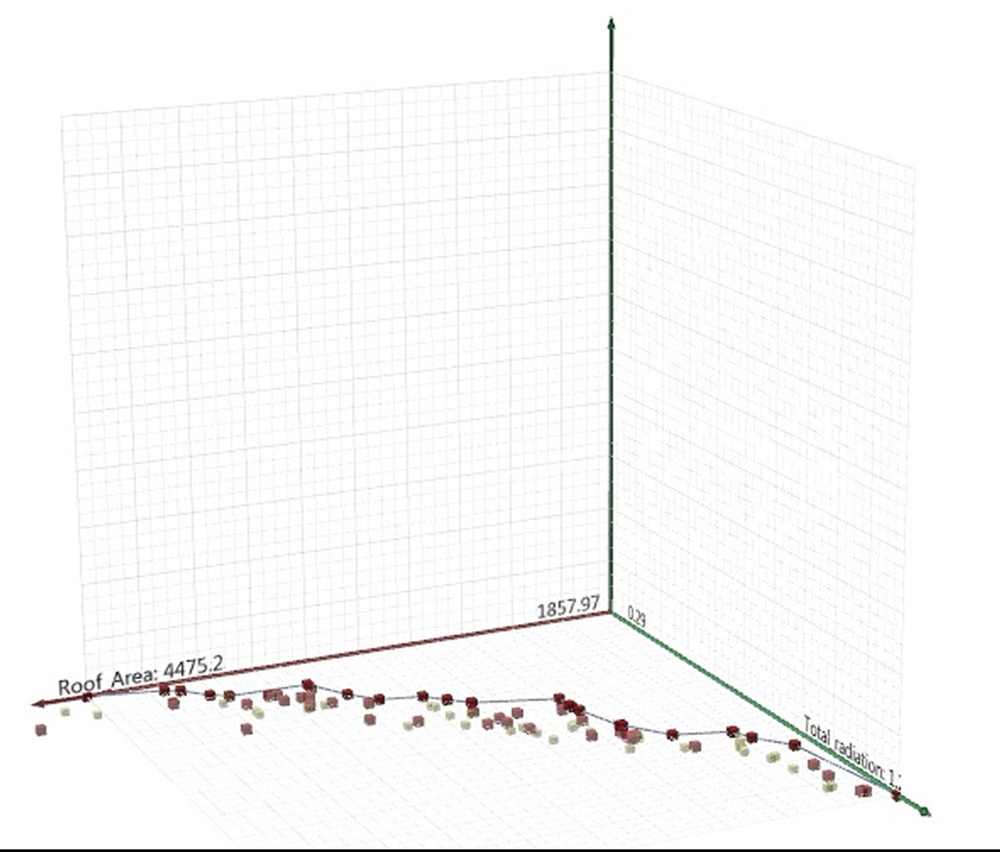

In this design process we chose two objectives which are minimume area and minimume radiation and we have
some gens such as form of roof, hight , location of roof hole and the depth of cantiliver.
We run it in Octopus to find the best result which matches conditions and also it is visually
satisfactory.
▾

This is the demonstration of the evolving in octopus plug-in
▾